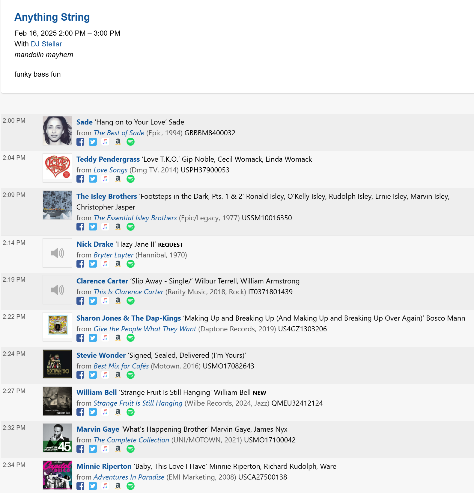
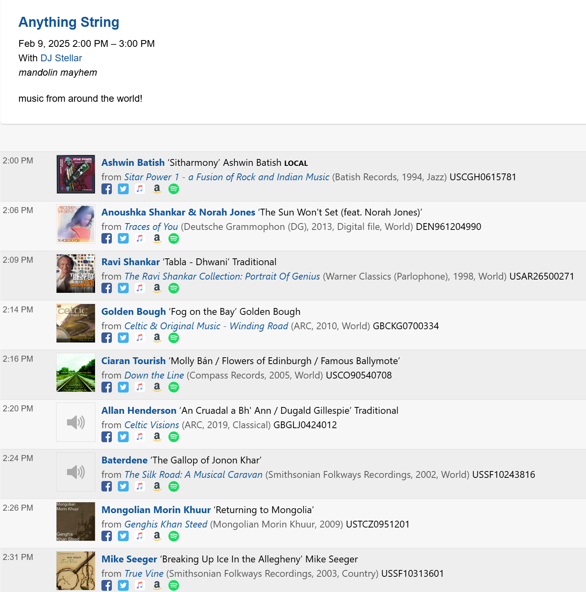
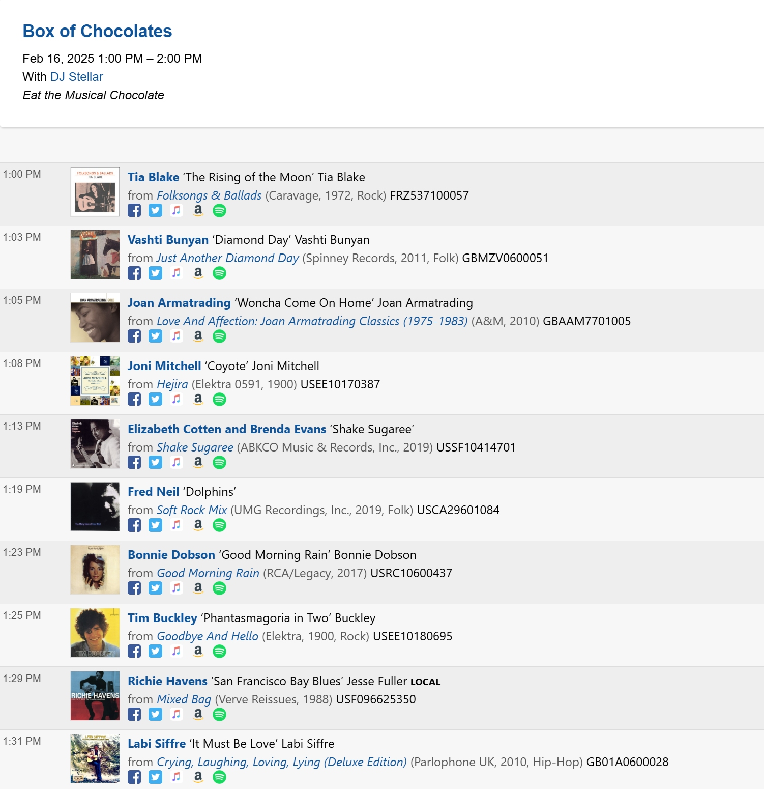

Every Sunday from 2-3, only on
Rock out with DJ Stellar and tune in to Anything String. From banjo to mandolin, we'll explore different string instruments every week and their influence on different genres.
  Diversity in Radio Art
Radio art is a powerful medium for storytelling, connection, and change. a My hope is that this project ensures KZSC will continue to lead as a creative and inclusive platform for radio art, equipping students with the skills and opportunities to thrive. By addressing barriers to access and fostering diversity, the station becomes not only a space for artistic exploration but also a model for equity and collaboration within the university and beyond.